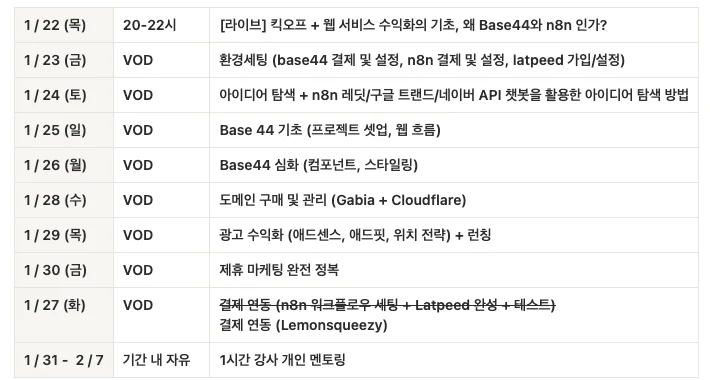
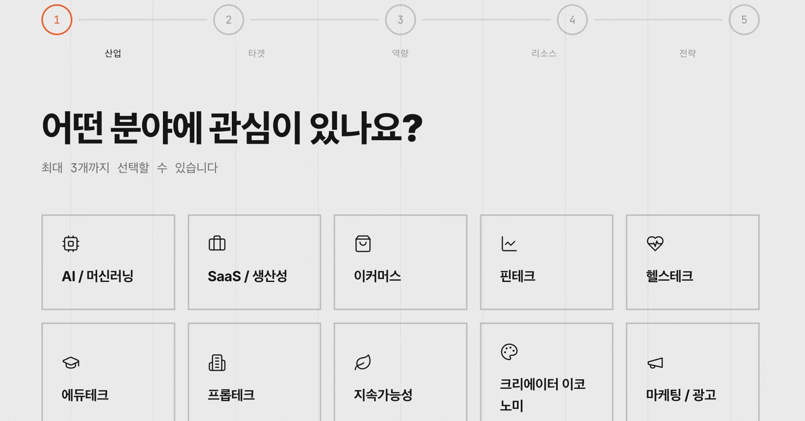
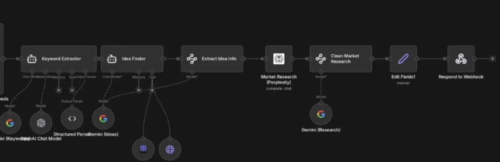

PROJECT 02 / 사업 기획 · AI 구현
Billders 교육 사업과 AI 기능 제작
AI 서비스 제작 교육의 기획·판매·운영을 맡고, 고객의 사업아이템 탐색을 돕는 랜딩페이지와 n8n 흐름을 만들었습니다.
- 소속·구분
- 대모산개발단
- 기간
- 2026.01 — 2026.04
- 본인 역할
- 사업 기획·판매·운영·강의 / 랜딩페이지 기획·제작
- 도구·범위
- AI · n8n · UTM 링크 관리
CONTEXT
제작 방법을 배우는 교육과
사업 운영을 함께 맡았습니다.
Billders는 비개발자가 AI로 웹·앱 서비스를 만들고 수익화 방법을 배우는 유료 교육 사업입니다. 라이브·VOD·개인 멘토링으로 운영했으며, 저는 기획·판매·운영·강의를 담당했습니다. 차시별 콘텐츠는 동료 강사들과 함께 제작했습니다.

01 / CUSTOMER JOURNEY
판매에서 교육 시작까지
고객이 거치는 경로를 살폈습니다.
기존 고객 DB의 안내 메일과 후속 세일즈콜, 유튜브·Threads 홍보를 병행했습니다. 팀이 사용하는 홍보 링크를 공유·관리할 수 있도록 UTM 추적관리 도구를 직접 제작하고 유입을 확인했습니다.
콘텐츠의 주제·썸네일과 랜딩페이지의 반응을 비교하며, 고객이 관심을 갖고 행동할 만한 정보를 제공하는 데 집중했습니다.
02 / PROBLEM & HYPOTHESIS
아이템 선정의 어려움을
고객 확보의 접점으로 봤습니다.
주요 고객을 ‘AI로 사업을 시작하고 싶지만 아이템 선정에 어려움을 겪는 비개발자’로 설정했습니다. 소개만 읽는 페이지보다, 자신의 상황에 맞는 아이디어를 얻는 경험이 참여 동기를 줄 수 있다고 판단했습니다.
사업 소개를 읽고 이메일 입력
사업 소개 중심의 랜딩페이지 하단에서 이메일 입력과 정보 제공을 안내했습니다.
상황을 선택하며 아이템 탐색
관심 분야·가용 자금 등을 입력하고 AI의 제안을 확인하는 흐름으로 바꿨습니다.
03 / BUILD
고객의 탐색 경험을
AI와 n8n으로 구현했습니다.
상황 선택형 랜딩페이지를 직접 제안·제작하고 n8n을 연동했습니다. 이메일 입력을 잠재 고객의 연락처 확보 지점으로 두고, 고객에게는 AI가 제안하는 사업아이템을 제공하도록 연결했습니다.


WHAT I LEARNED
사업의 목표와
고객이 얻는 가치를 함께 봤습니다.
이메일을 받는 기능을 만드는 데서 멈추지 않고, 고객이 왜 정보를 남길지 먼저 고민했습니다. 교육 운영, 홍보와 기능 제작을 함께 맡으며 고객의 관심이 실행으로 이어지는 과정을 경험했습니다.